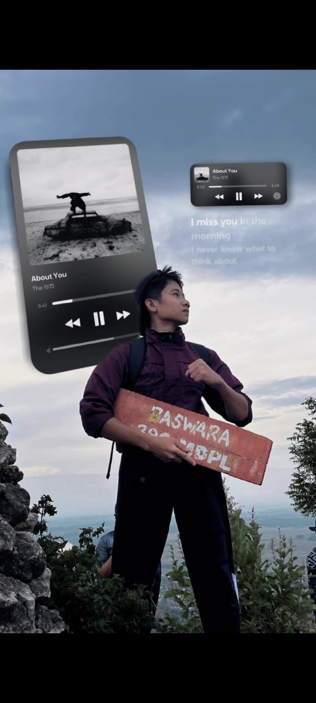

📖 Tentang Aku
Biografi Singkat
Perjalanan hidup, prestasi, dan mimpi-mimpi seorang anak Tuban yang suka muncak dan pantang nyerah.

Achmad Brian Putra Pratama
Siswa SMAN 1 Tuban · Kelas X-F · No. Absen 01
✦ Pantang menyerah, berani, dan selalu ingin lebih
🗺️ Perjalanan Hidup
2008 — Lahir
Awal Mula Segalanya
Lahir di Tuban, 6 Desember 2008. Dari kecil udah punya jiwa yang nggak mau diam — selalu penasaran, selalu pengen nyoba hal baru. Tumbuh di lingkungan yang mengajarkan untuk berani dan mandiri.
2015–2021 — SD
SDN 1 Semanding
Menempuh pendidikan dasar di SDN 1 Semanding. Di sinilah benih-benih semangat belajar dan keberanian mulai tumbuh. Suka aktif dan nggak bisa diem.
2021–2024 — SMP
SMPN 1 Semanding — Mulai Berprestasi
Lanjut di SMPN 1 Semanding. Di sinilah karir prestasiku mulai keliatan — aktif di OSIS, ikut berbagai lomba, dan mulai serius di dunia menulis. Nggak cuma belajar di kelas, tapi juga belajar dari pengalaman organisasi.
2024 — SMA
SMAN 1 Tuban — Babak Baru
Sekarang menjalani kelas X-F di SMAN 1 Tuban. Ekskul voli, tetap aktif running & muncak, dan terus nulis. Target: makin berkembang dan nggak berhenti di satu pencapaian.
🏆 Prestasi
Juara 2 Lomba Bahasa Inggris
Se-Kabupaten Tuban — kompetisi tingkat kabupaten yang nggak sembarangan bisa masuk final
Beberapa Medali Fun Run
Rutin ikut event Fun Run dan berhasil kumpulin beberapa medali dari berbagai event lari
Prestasi di Bidang Menulis
Punya rekam jejak prestasi di dunia kepenulisan — salah satu bidang yang paling disukai
Pengurus OSIS SMP
Aktif di organisasi OSIS saat SMP — belajar kepemimpinan dan kerja tim dari sini
🌟 Kepribadian
⚙️ Kemampuan
Cita-cita: Offshore
Aku pengen kerja di industri offshore — dunia yang butuh keberanian, ketangguhan, dan mental baja. Bidang yang nggak bisa diraih oleh orang yang gampang nyerah. Pas banget sama karakter aku. Dari sekarang aku udah ngebangun fondasi lewat prestasi akademik, fisik yang terlatih dari running dan muncak, dan mental yang ditempa dari berbagai kompetisi dan organisasi.